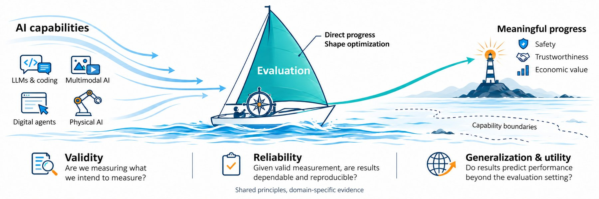

Evaluation decides which capabilities the field pursues, yet it is still practiced more as a craft than a science. This workshop brings together researchers across LLMs, multimodal understanding and generation, digital agents, and physical AI to treat evaluation itself as the object of study.
Tentative. This workshop has not yet been confirmed. All details on this page, including the title, venue, and dates, are provisional and may change.
Evaluation is the compass for AI progress: what we choose to measure shapes what we choose to build. Each major shift in AI has been marked by a parallel shift in how progress is measured, from classification accuracy on ImageNet, to language understanding on GLUE and SuperGLUE, to knowledge and reasoning on MMLU and GSM8K, to the open-ended, interactive, and embodied settings now probed by Chatbot Arena, SWE-bench, and a growing family of agentic and physical-AI testbeds.
Despite this influence, evaluation is still practiced more as a craft than a science. Benchmarks are contaminated or saturated before anyone agrees how to detect it, generative metrics borrowed from earlier tasks go unvalidated against human judgment, agent success rates hide how success was obtained, and physical AI results rarely transfer across labs.
The Science of Evaluation is organized around the premise that these problems have more in common than domain boundaries suggest. By bringing researchers from different areas into the same room, we aim to find out which evaluation principles hold across domains and which do not, so that each community can borrow validated practices from the others instead of reinventing them.
Training data overlaps with test questions, and benchmarks are driven to ceiling within a year or two.
Metrics such as FID were built for earlier tasks, and human evaluation protocols vary across papers.
A higher score may reflect a larger retry budget or broader tool access, not a more capable agent.
Safety constraints, hardware cost, and the sim-to-real gap mean almost no two labs evaluate alike.

If capability is the wind that drives AI forward, evaluation is the compass and the rudder: it generates none of the force itself, but it decides whether that force takes us somewhere worth going.
Speakers and participants will be asked to state the principle they rely on in their own evaluation practice, the evidence that supports it, and the conditions under which it stops holding.
What do evaluation results actually measure?
How should a capability, such as physical plausibility in video generation or robustness in agent planning, be decomposed into measurable, checkable dimensions? How can an evaluation separate the capability it claims to test from shortcuts such as training-data overlap, favorable tool configurations, larger retry budgets, or uncredited human assistance?
When can evaluation results be trusted?
How should human annotators and model-based judges be calibrated and audited for bias? How should evaluation account for contamination, sampling variance, and implementation differences, given that repeated trials are cheap for software but expensive, slow, or physically risky for embodied systems?
Where do evaluation results remain informative?
Does a result on a fixed benchmark predict performance on new tasks, environments, users, or hardware? How should evaluation account for failure modes, human intervention, latency, and cost, rather than a single aggregate score? When does saturation mean a benchmark has stopped being informative?
Across these questions, we ask how evaluation design can be made to actively reward safety, trustworthiness, and real-world economic value, and not only raw capability.
We welcome original research and work in progress that treats evaluation itself as the object of study. We invite empirical, theoretical, and methodological contributions, including new benchmarks, benchmark audits, replication studies, negative results, and well-supported position papers. Submissions may focus on a single domain or compare across domains; each should state clearly what it contributes to understanding or improving evaluation, not only to improving a score.
Knowledge, factuality, reasoning, calibration, and multilingual capabilities.
Software engineering, tool use, web and computer interaction, and long-horizon workflows.
Grounding, compositionality, temporal reasoning, image and video generation, and world modeling.
Robot learning, manipulation, navigation, human–robot interaction, and sim-to-real transfer.
Capability coverage, task construction, difficulty, saturation, and benchmark maintenance.
Interpretable evaluation dimensions, shortcut detection (e.g., contamination, retry budgets, uncredited assistance), capability attribution, and failure analysis.
Annotation protocols, human preferences, LLM/VLM judges, evaluator bias, and validation against ground truth or human perception.
Contamination detection, uncertainty estimation, repeated trials, statistical comparisons, and resource-controlled evaluation across software and physical settings.
Distribution shifts, human intervention, cost, latency, and sim-to-real transfer in realistic workflows.
Harmful failures, robustness, appropriate abstention, and the effects of optimizing for a benchmark metric rather than the underlying capability.
4–8 pages excluding references and appendices, using the official template (to be announced). Papers should present substantive empirical, theoretical, or methodological contributions to evaluation, and should be original work not under review at another archival venue.
Same format, up to 4 pages excluding references and appendices. Welcomes work in progress, focused experiments, replications, negative results, and recently published work accompanied by a substantive new analysis (e.g., a benchmark audit or follow-up result). Prior or concurrent publication must be disclosed and does not count against acceptance.
Authors should identify the primary research domain and evaluation question addressed by their submission, and clearly state its claims, supporting evidence, and limitations. We will prioritize original and ongoing work when selecting contributed talks.
The workshop is non-archival and has no formal proceedings. Accepted papers will be made public on OpenReview. Authors remain free to submit accepted papers to archival venues afterward.
AI systems may not be primary authors or reviewers of workshop papers. Authors must disclose any AI assistance in a dedicated section, which does not count toward the page limit, and remain responsible for every claim, citation, and result. Short-paper submissions must be primarily human-authored; AI assistance is allowed, AI-generated papers are not. Reviewers may use AI tools only to assist their own writing, must disclose such use, and must not paste submissions into tools that retain or train on the text.
Conflicts are declared in OpenReview profiles and computed by OpenReview from institutions and co-authorship. In addition to standard institutional conflicts, we apply these rules:
All dates are tentative and may change. Deadlines are 23:59 Anywhere on Earth (AoE).
Researchers whose datasets and benchmarks their fields use to measure progress.
The morning centers on evaluation in physical AI, the afternoon on digital AI, and the closing panel connects the two halves.
Times are local to the workshop venue and subject to change. A short checklist for interpreting evaluation claims and a summary of the panel discussion will be published on this website after the workshop.
A team spanning multimodal understanding and generation, LLMs and digital agents, physical and embodied AI, and reliability and uncertainty, across Singapore, the United States, and Canada.
We gratefully acknowledge Lambda's support of the workshop's paper awards and compute credits for every accepted paper.
Organizer Jianwen Xie is affiliated with Lambda and recuses himself from all paper-award decisions.
For questions about the workshop, submissions, or sponsorship, please reach out to Ziqi Huang: